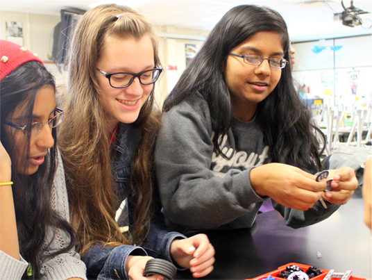
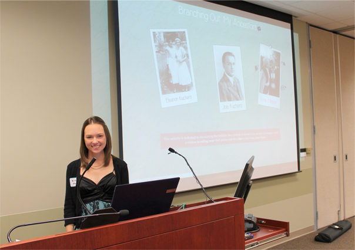
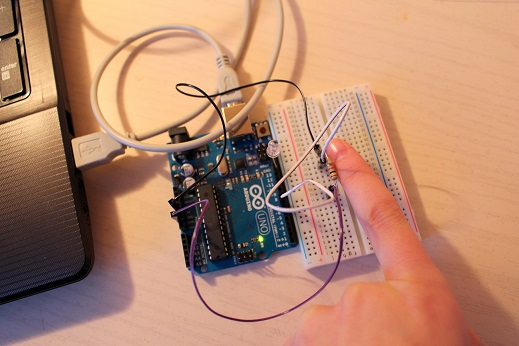
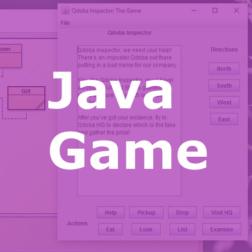
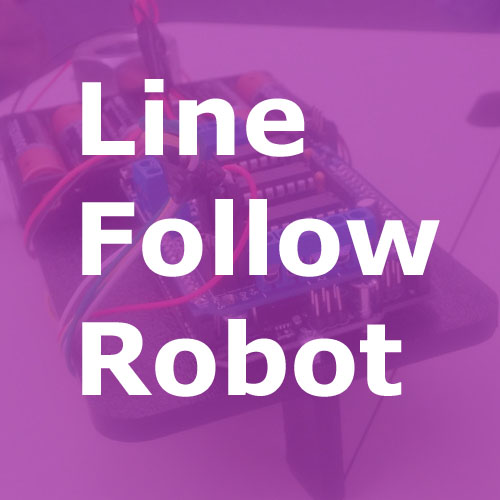
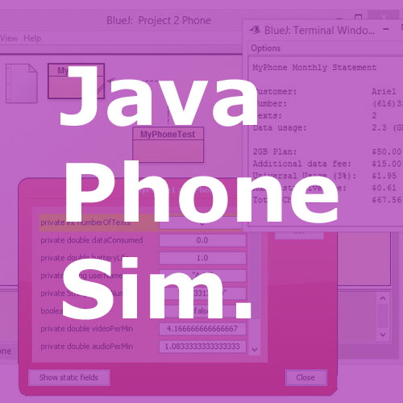
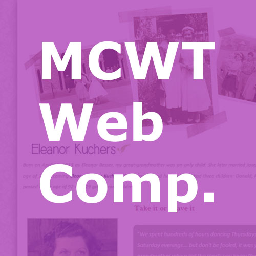
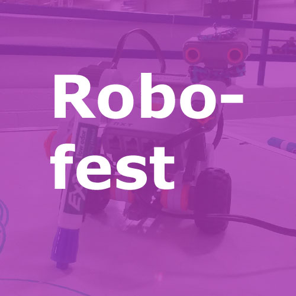
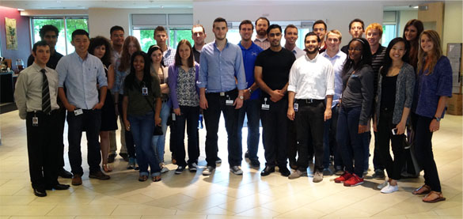
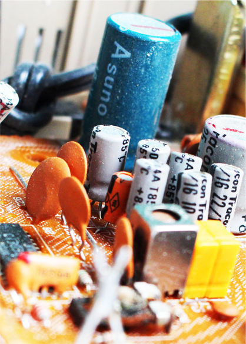

ARIEL WHO? |
|

|
Hello! I'm Ariel Magyar, a second year Computer Engineering major at Grand Valley. Web development is a passion of mine, so I designed and coded this website myself for the Eric Maino Community Technology Award. The languages I used to create it are HTML and CSS. I come from an artistic background and always loved to draw and create growing up. The reason I love working in technology is because I can combine that imaginative background with analytical thinking to come up with creative solutions to problems. I really enjoyed building this website for you, so I hope you enjoy my application! |
MY JOURNEY TO COMPUTER ENGINEERING |
|
|
During my freshman year of high school, my answer to "What do you want to be?" was "No clue." During my junior year, I said I wanted to be a Graphic Designer. For the longest time, a career in technology wasn't for me. I have always been a creative spirit who likes painting with watercolors and didn't want to go into something as ridged as a STEM field, much less something with computers! By my senior year, something changed: I decided to join GET-IT, an organization that sought to introduce girls to technology. Upon joining, I was really excited because the first big event of the year was a web design competition. It just so happened that I decided to teach myself HTML in middle school, and I actually really enjoyed it, but I never connected something so exciting and creative like designing a website to working in the "boring" field of tech. GET-IT showed me, however, that technology doesn't have to be dull and it's a field that welcomes imagination. I spent months perfecting my Ancestry-themed website and victoriously placed fourth in the Advanced Category, despite it being my first time entering the contest. This really got my creative juices flowing and I challenged myself to create a personal self-coded website. I developed the pages, purchased a domain name, uploaded my files and images to a server, and to this day it's still up and running at www.arielmagyar.com. |
  |
|  |
Once I entered Grand Valley, I thought I wanted to be a Mechanical Engineer. I loved to draw and thought that designing parts would be right up my alley! Then in my Intro to Engineering Design class we started working with Arduinos, programmable prototyping platforms, and I realized that it was the aspect of class I enjoyed the most. I thought it was really cool that something I programmed could cause a light to blink, or a motor to turn on, or a robot to act according to information from a sensor array. I officially declared myself as a Computer Engineering major by the end of my freshman year and have been enjoying it ever since. |
|
During winter break of my first year of college, I wanted to make some extra money, so I researched jobs available on campus. I saw a student web developer position was open and applied for it, despite being nearly entirely self-taught in HTML and CSS and not having a single clue what queries were. I just reached my one year anniversary of working in that position on the GVSU Web Team and have developed websites for clients all across the university, ranging from forms for events to full blown systems. I've learned to create tables within the database, draw out information using SQL, and implement it with ColdFusion. All that being said, my biggest point of pride would have to be finding my passion and taking all steps necessary to pursue it. I'm proud of being an artistic person in a field with a rigid reputation, and enjoy debunking stereotypes every time I'm asked "What do you want to be?" |

|
PROJECTS I'VE WORKED ON |
|
| I've worked on many projects within the last five years, my favorites of which are below. You can click any of them to visit my main site for more detailed information. | |
|  | |
|  |  |
|  |  |
INTERNSHIPS |
|
|

|
I had the awesome opportunity to intern in the IT department at Mercedes-Benz Financial Services during a six-week summer program just before my freshman year of college. This program was unique in that each week I went to a different department, so I got to experience a lot of what IT has to offer. I worked in project management, shared services, information technology infrastructure, security, and web development. I also toured Detroit Diesel and volunteered at the Detroit Institute of Arts. This summer, I have an internship lined up at Disher Design & Development in Jenison, MI where I'll be working in electronics design. I'll use languages that I've learned in class such as C, C++, and Java to create real world solutions to client needs. I'll also be working in app development to help expand the company beyond electrical and mechanical engineering and further into software development. |
FUTURE ASPIRATIONS |
|
| I know that technology is my passion and I really love problem-solving. In the future, I'd like to work with embedded software to create solutions to make the world a better and more efficient place. I would also like to lead workshops to teach people about technology, because I feel like there's a stereotype around it that it's a rigid field, but in reality there is a need for people with creativity to come up with out-of-the-box solutions that aren't taught about in a textbook. |  |
THANK-YOU |
|

|
I'd like to give a big thank you to the Eric Maino Community Technology Award committee for considering my application and listening to my story. It means a lot that you're helping students accomplish their dreams by helping fund their education, and I hope you find some awesome people to give the award to! |